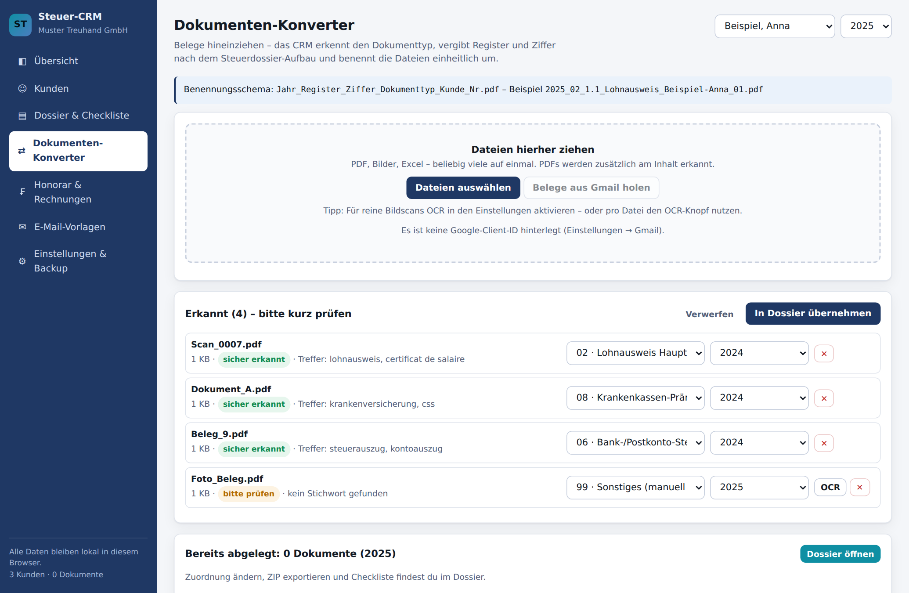
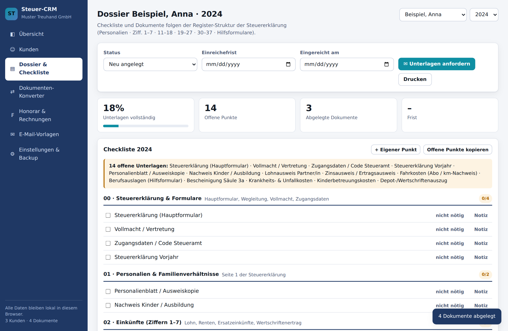
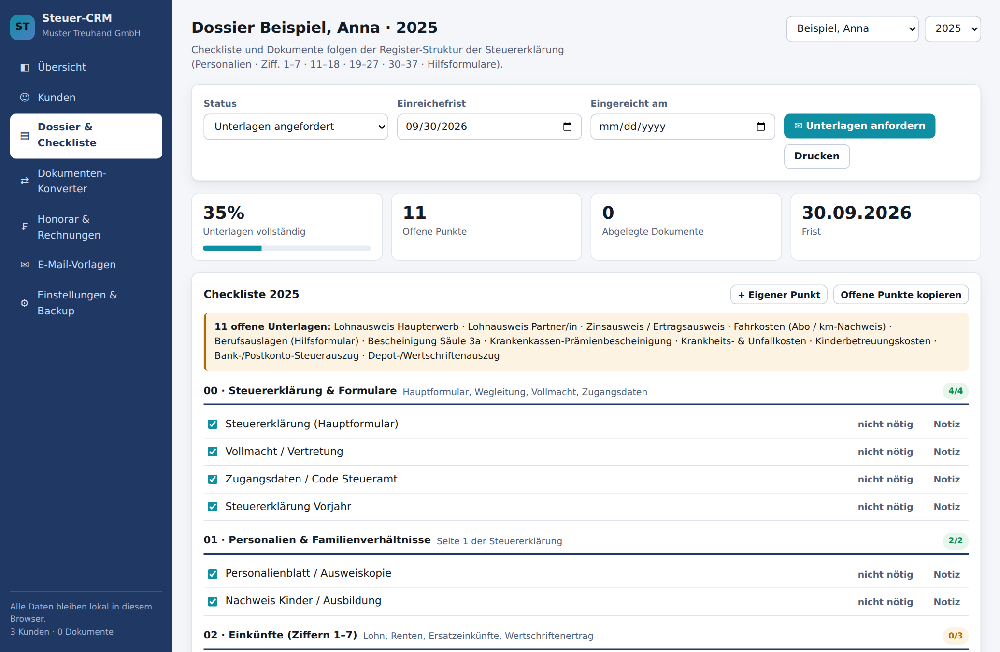
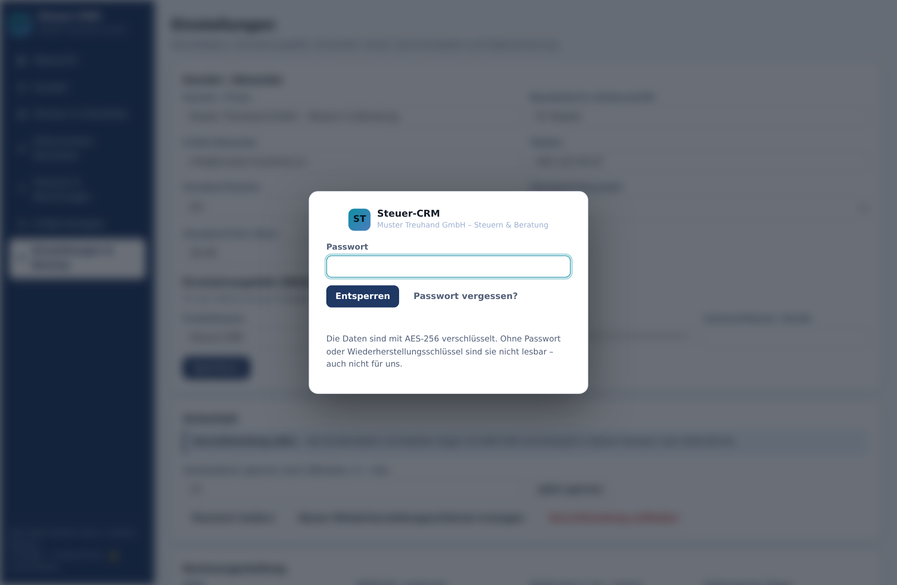
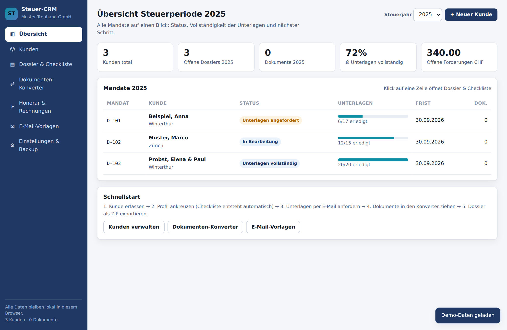

Das CRM für Treuhand und Steuerberatung: Es liest Ihre Belege, sortiert sie nach den Registern der Steuererklärung, führt die Checkliste pro Mandat und schreibt am Schluss die Rechnung. Alles auf Ihrem Gerät – verschlüsselt, ohne Cloud-Zwang.

Scan_0007.pdf.Mails, WhatsApp-Fotos, Papierbeigen, Ordner auf dem Desktop – und niemand weiss, was schon da ist und was fehlt.
IMG_4821Jeder Beleg wird von Hand umbenannt und einsortiert. Pro Mandat eine halbe Stunde, die niemand verrechnet.
Die Prämienbescheinigung fehlt, dann der Zinsausweis. Jede Nachfrage kostet Tage – und die Frist rückt näher.
Belege hineinziehen. Das CRM liest den Inhalt der PDF – nicht nur den Dateinamen –, erkennt Lohnausweis, Prämienbescheinigung oder Bankauszug, benennt die Datei nach festem Schema um und legt sie ins richtige Register.
Benennungsschema:
2024_02_1.1_Lohnausweis-Haupterwerb_Muster-Anna_01.pdf
Register 00–11 nach dem Aufbau der Steuererklärung (Ziffern 1–7, 11–18, 19–27, 30–37,
Hilfsformulare). Andere Kantone: Ziffern einmalig erfassen, fertig.


Beim Kunden kreuzen Sie an, was zutrifft: Wertschriften, Säule 3a, Kinder, Wohneigentum. Daraus entsteht die vollständige Liste der benötigten Unterlagen – mit Ziffer. Sobald ein passender Beleg im Dossier liegt, ist der Punkt erledigt.
Ein Klick erzeugt die E-Mail „Unterlagen anfordern" mit genau den fehlenden Punkten. Mit Gmail-Anbindung geht sie direkt raus, samt Dossier im Anhang.
Personalien, Partner, Kinder, Steuerprofil, Dossier pro Steuerjahr mit Status von „Unterlagen angefordert" bis „veranlagt".
Inhaltserkennung ohne Internet, Umbenennung, Register-Zuordnung, ZIP-Export mit Inhaltsverzeichnis. Optional OCR für Scans.
Aus dem Profil erzeugt, automatisch abgeglichen, druckbar, als E-Mail-Text kopierbar.
Anfordern, Erinnern, Freigabe, Einreichung, Honorar – mit den offenen Punkten im Text. Direktversand über Gmail möglich.
Tarifliste, Positionen, MwSt, Nummernkreis, Zahlungseingang, druckbare Rechnung, offene Forderungen auf der Übersicht.
AES-256 auf dem Gerät, Sperrbildschirm, Wiederherstellungsschlüssel, verschlüsselte Backups. Optional Synchronisation über eigene Geräte.
Das Programm ist eine einzige Datei, die im Browser läuft. Es gibt keinen Server, auf dem Ihre Mandate liegen, und keinen Anbieter, der mitlesen könnte.
Mit einem Klick verschlüsseln Sie die gesamte Datenbank inklusive aller Belege. Danach fragt das Programm beim Start nach dem Passwort und sperrt sich bei Inaktivität selbst. Für den Notfall gibt es einen Wiederherstellungsschlüssel.
Wer über mehrere Geräte arbeiten will, schaltet die Synchronisation zu – übertragen werden ausschliesslich verschlüsselte Datensätze, in ein Rechenzentrum in der Schweiz.


| Mandate pro Saison | 150 |
| Eingesparte Zeit pro Mandat | 20 Minuten |
| Eingesparte Zeit total | 50 Stunden |
| Bei einem Stundenansatz von CHF 120 | CHF 6'000 |
Das Paket amortisiert sich im ersten Monat der Saison. Rechnen Sie mit Ihren eigenen Zahlen nach – wir zeigen es Ihnen gerne an Ihren Mandaten.
Nein. Die Zahlen erfassen Sie weiterhin in ZHprivateTax oder eTax. Das CRM übernimmt alles davor und danach: Unterlagen anfordern, sortieren, dokumentieren, abrechnen.
Ja. Mitgeliefert sind die Ziffern des Kantons Zürich. Für weitere Kantone werden die Ziffern einmalig erfasst – auf Wunsch machen wir das für Sie (Kantonspaket). Erfundene Ziffern gibt es nicht.
Das Programm exportiert auf Knopfdruck ein vollständiges, verschlüsseltes Backup inklusive aller Belege. Auf einem neuen Gerät lesen Sie es wieder ein. Wer mag, schaltet die Synchronisation zu.
Digitale PDF werden immer am Inhalt erkannt, ohne Internet. Reine Bildscans brauchen die zuschaltbare Texterkennung (OCR) und eine Internetverbindung – oder einen Scanner mit Texterkennung.
Beliebig viele Geräte einer Kanzlei. Gleichzeitiges Bearbeiten desselben Mandats auf zwei Geräten ist nicht vorgesehen – dort gewinnt die spätere Speicherung.
Verschlüsselt wird im Browser mit AES-256-GCM; der Schlüssel entsteht aus Ihrem Passwort und wird nirgends gespeichert. Ohne Passwort oder Wiederherstellungsschlüssel sind die Daten nicht lesbar – auch für uns nicht. Das ist Schutz und Verpflichtung zugleich: Bewahren Sie beides sicher auf.
Wir zeigen Ihnen das Programm live, sortieren ein paar Ihrer Belege und Sie entscheiden in Ruhe.